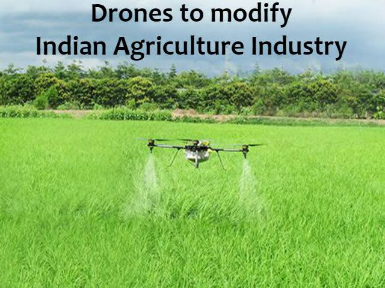

ofhybrid seeds
of selected
variety of a
single crop, technologica-
lly Forming
Indiais a joint venture betweenVyas Group and energy
| Modern farming technology is used to improve the wide types of production practices employed by farmers of india. | |
It makes use ofhybrid seeds of selected variety of a single crop, technologica- lly Forming Indiais a joint venture betweenVyas Group and energy |
Advanced equipment and lots of energy subsidies in the form of irrigation water, fertilizers and pesticides.Forming India has a well-equipped factory setup at Shirwal, Pune that offers best in the class service with cutting-edge technology.
Modern farms and agricultural operations work far differently than those a few decades ago, primarily because of advancements in technology, including sensors, devices, machines, and information technology. Today’s agriculture routinely uses sophisticated technologies such as robots, temperature and moisture sensors, aerial images, and GPS technology. These advanced devices and precision agriculture and robotic systems allow businesses to be more profitable, efficient, safer, and more environmentally friendly.
Farmers no longer have to apply water, fertilizers, and pesticides uniformly across entire fields. Instead, they can use the minimum quantities required and target very specific areas, or even treat individual plants differently. Benefits include:
1.Higher crop productivity
2.Decreased use of water, fertilizer,
and pesticides, which in turn keeps food prices down
3.Reduced impact on natural ecosystems
4.Less runoff of chemicals into rivers and groundwater
5.Increased worker safety
In addition, robotic technologies enable more reliable monitoring and management of natural resources, such as air and water quality. It also gives producers greater control over plant and animal production, processing, distribution, and storage, which results in:
6.Greater efficiencies and lower prices
7.Safer growing conditions and safer foods
8.Reduced environmental and ecological impact
Agriculture is the most important sector in the world that provides food to a human being. The agriculture sector is the second greatest source of employment after the service sector contributing 28% in global employment. Around 1.3 billion people are employed by the agriculture sector. Nowadays modern agriculture technology play a big role in farming.
The farming business is completely dependent on nature. In many parts of the world, this sector is in danger due to tremendous changes in climate due to global warming and many others. It is a need today to educate a farmer to make him use Modern agriculture Technology that can make farming easier and affordable too. A warning way before the crisis actually rises can help us to decrease the chances of losses and empower the agriculture sector around the globe.
Today, more farm equipment is available with smart sensors that can read everything from crop health to essential nitrogen levels in the water. The sensors then enable on-the-go applications of input based on real-time field conditions.
Sensor technology is also available to measure the electrical conductivity of soil, ground floor, organic matter content and even soil characteristics such as pH. For example, Varis Technologies, Bionics, and Dulem all produce different types of soil sensors
Modern farms usually have electronic sensors distributed in the field that can monitor for different conditions; In some cases, gadgets send data to an on-the-farm server or cloud (network servers are widely used for computing and data processing).
These figures are analyzed automatically and send instructions to the farm’s automatic irrigation system, which in some cases may even add the correct dose of fertilizer as needed before the proper amount of water is dispersed through drip tape, with hollow rows of holes running along with the crop.
It maximizes efficiency, periodically distributes the right amount of water, can prevent waste and reduces the volume of fertilizer water. Farmers can access this data via tablet or smartphone, giving them real-time information that will require a slow, manual-intensive soil-testing process in the past.
Ten years ago, displaying up to five in a stream of wires hanging from one edge of the wire to the rear window with tractor-controlled equipment was not uncommon. Today, those monitors are called virtual terminals on one screen. Together the wire has formed a large cable called a binary unit system (BUS) that plugs into any implementation brand.
Enabled technology is called ISOBUS, a communications protocol based on agricultural electronics standard ISO 11783 and Controller Area Network or Cannabis technology.
The development of self-driving cars is also accelerating on the farm. Self-driving tractors and robots are becoming more common as a way to automatically control the cost of payroll from time to time done by humans. There are robots to choose lettuce and strawberries, grass, oranges, and cut grapes.
Some attached to a human-powered tractor while some are highly customizable with sensors and attachments that perform very specific tasks, such as finding out where the cows are pollinated and treating to stimulate the affected grass to grow again. These robots are often guided by precise GPS tracking so they can easily navigate the narrow space between rows of crops.
Urban and vertical home farming is becoming more popular, which gives growers of certain crops a year-round way to grow, regardless of the weather outside. But one of the challenges is how to create the ideal wavelength of sunlight adapted to the growth of compressed indoor spaces.
While indoor lighting has traditionally been used by energy-intensive and expensive full-spectrum fluorescent lighting to promote plant growth, advances in light-emitting diodes (LEDs) in recent years have provided a cheaper and better alternative. Modern agriculture technology make Farming easier and smarter
Biotechnology is also referred to as genetic engineering and the process of improving the genes of a given crop. In most cases, genetic engineering is carried out to increase the resistance of certain crops to farm inputs such the application of herbicides. Through biotechnology, farmers can plant on areas that were otherwise considered dry or deserts. Reduced farm inputs implies that the farmer as well saves on the cost of farm resources.
Modern agricultural technology hopes to achieve among others, two important goals – profitable economy and better output. It is therefore, important to be careful with the goals and objectives that you set aiming upon the implementation of different technologies in agriculture. Some of the aspects that you should look at include how to apply and organize fertilizer, irrigation, theatre, intensive tillage, monoculture, and the application of other resources. However, in order to achieve these goals, farmers need to understand the concept of modern farming and the use of technology.